Music on every phone, in five minutes.
No experience needed. Follow the steps one by one; each one shows what your screen looks like. Inside the app, a First Steps card walks you through the same steps and ticks them off on its own.
What you need
- Two or more iPhones or iPads with iOS 17 or later, close to each other.
- The same Wi‑Fi on all of them. No Wi‑Fi? Turn on Personal Hotspot on one phone and connect the others to it.
- Music files (MP3, M4A, WAV …) on at least one device, in the Files app — or songs you bought or synced in the Music app.
- That’s all. No account, no sign-up, no speaker.
-
1
Open Tutti
Install Tutti on every device and open it on the first one.
- Tap Continue.
- Your iPhone asks whether Tutti may find devices on your local network: tap Allow. Without it, the phones can’t find each other.
Tapped “Don’t Allow” by mistake? Open the Settings app › Privacy & Security › Local Network and switch on Tutti.
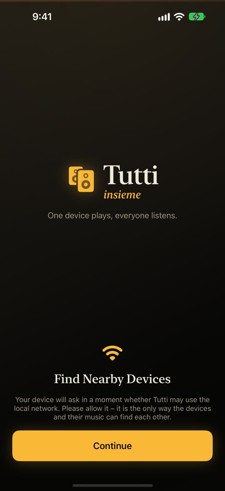
The first screen 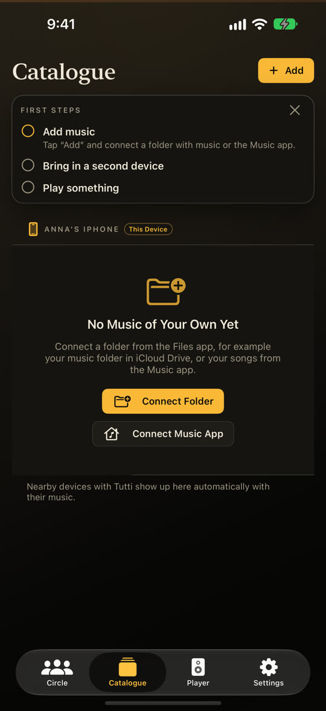
The First Steps card -
2
Bring in a second device
Open Tutti on the second iPhone or iPad too, and tap Continue and Allow there as well.
- That’s it: it joins your circle by itself. The first phone greets it with “Salute!”.
- Tap Circle at the bottom: under Online now you see every device that is with you.
A circle is simply your group. Several groups in the same place? Then Tutti asks once “Which circle do you belong to?” — tap yours.
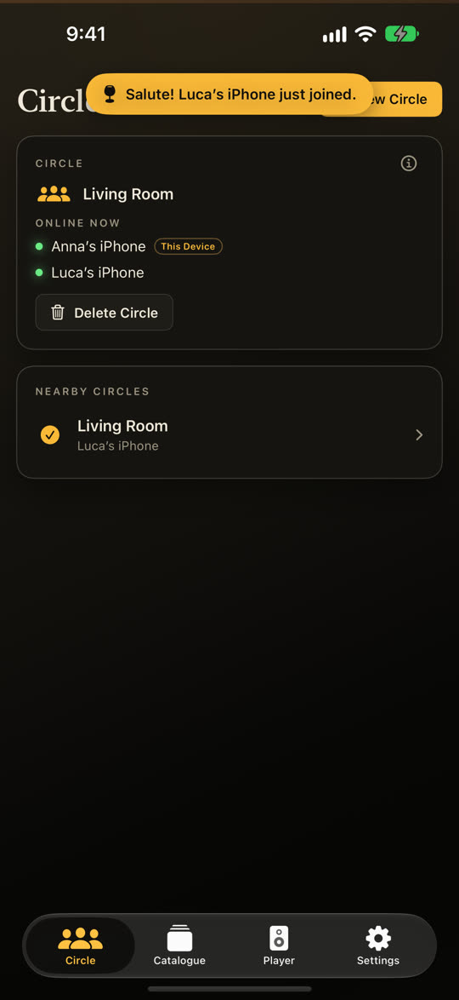
“Salute!” and Circle › Online now -
3
Add your music
On the phone that has the music, open Catalogue.
- Tap Add, then Connect Folder.
- Find the folder with your songs (for example under On My iPhone or iCloud Drive), tap it, then tap Open.
- The catalogue now shows your songs, sorted by folders, albums, artists and playlists.
Songs from the Music app? Tap Add › Connect Music App instead. Bought and synced songs work; songs from an Apple Music subscription are copy-protected and stay greyed out.
No music on the phone yet? On a Mac or PC, put a folder of songs into iCloud Drive — it then shows up in the Files app.
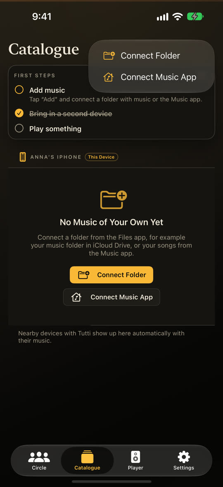
Add › Connect Folder 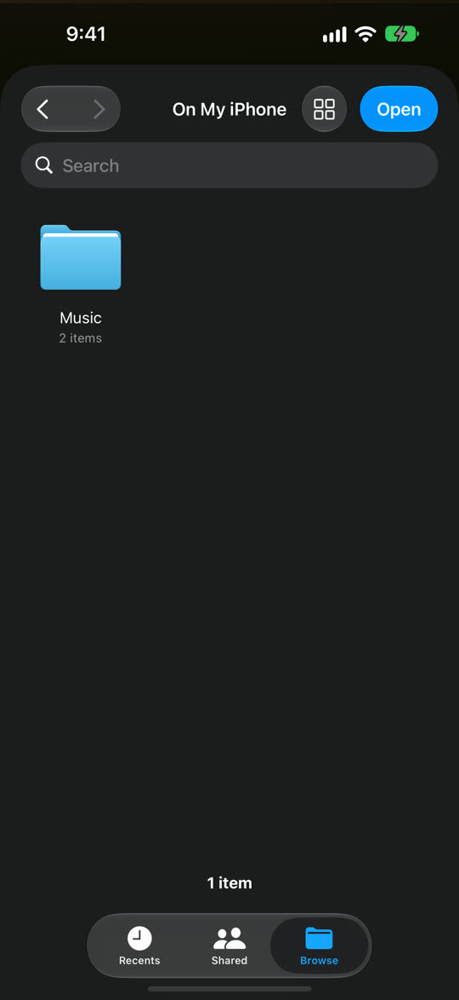
Choose the folder 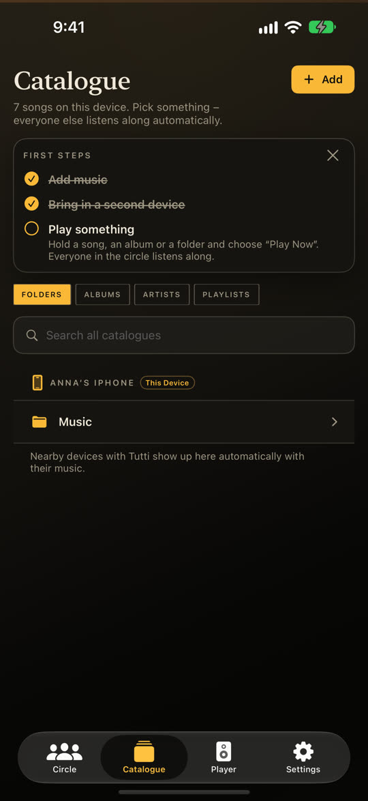
Your songs are in -
4
Play a song
- Open an album (or a folder) and tap a song. With nothing playing yet, it plays right away.
- Or tap Play All at the top for the whole album.
- Tap Player at the bottom: the song plays, and you see who is listening.
Something is playing already? Then a tap doesn’t cut it off: the song joins the queue. To hear it at once, tap Play Now in the note that appears.

Tap a song to play it 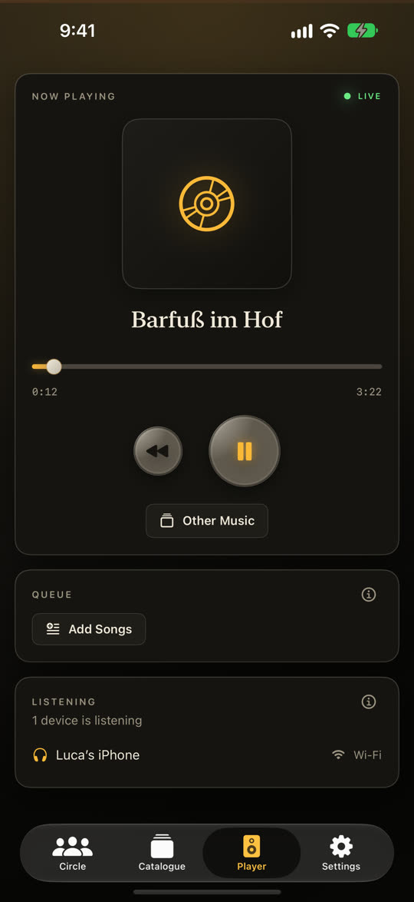
The player -
5
Everyone listens — and joins in
Look at the second phone: it plays the same song at the same moment. You don’t have to do anything there.
- Every phone can pause, skip and pick songs — not only the one that plays.
- In Catalogue, the second phone sees the first phone’s music too. Tap a song to add it to the queue: a tick marks it. Tap it again to take it out.
- In the Player, scroll down to see what comes next.
One phone sounds a little early or late? Open Settings › Sound Early / Late on that phone and move the slider by ear.
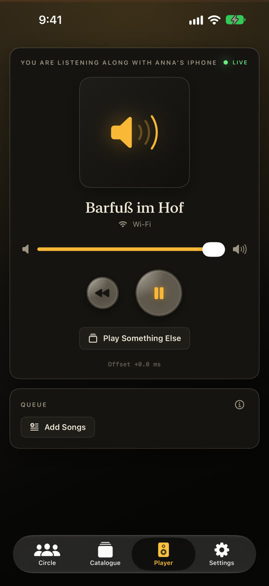
The second phone plays along 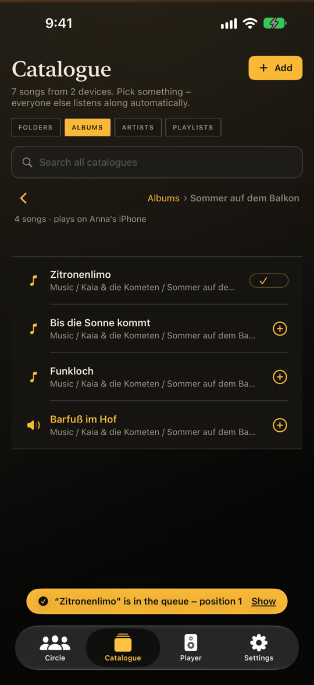
A tap adds a song to the queue 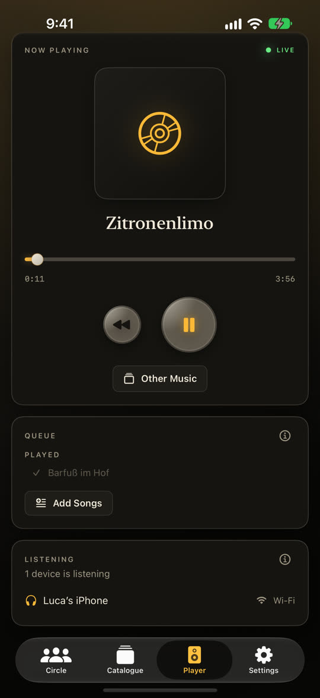
The shared queue -
6
Optional: a private circle
In a café, a hotel or at a big party, strangers nearby could join your circle. A private circle only lets in people with its code.
- Tap Circle › New Circle, switch on Private, code only, then tap Start Circle.
- Tutti shows a code and a QR code. Show it to your friends.
- They tap your circle under Nearby Circles and type the code — or scan the QR code with the Camera app.
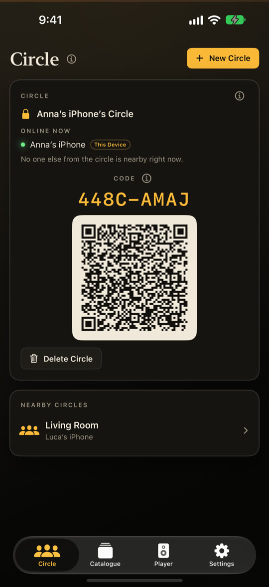
The code of the circle 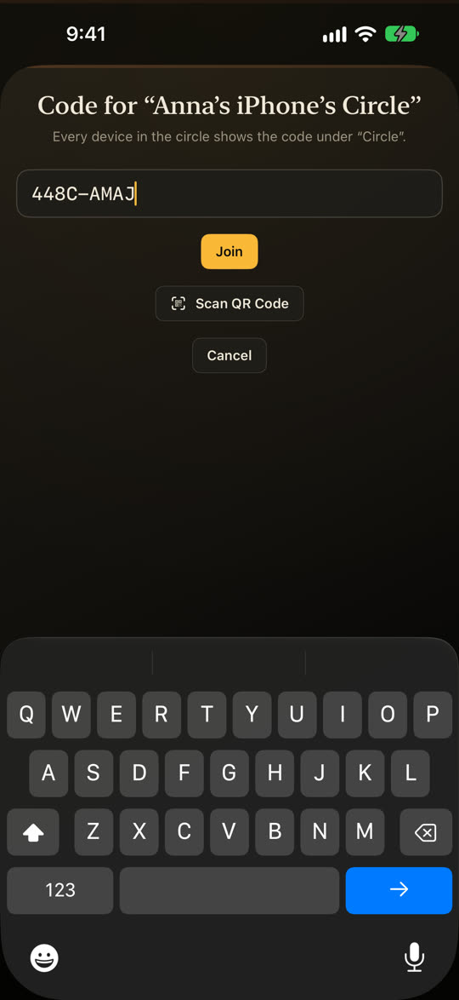
Joining with the code -
7
More than three devices
Up to three devices listen together for free, the playing one included. For a bigger group, one person buys Tutti Insieme Pro once: Settings › Tutti Insieme Pro. Then the whole circle is unlocked — for everyone in it.
Listening is always free. If the circle is full, the new phone shows “The circle is full” with a button to unlock Pro.
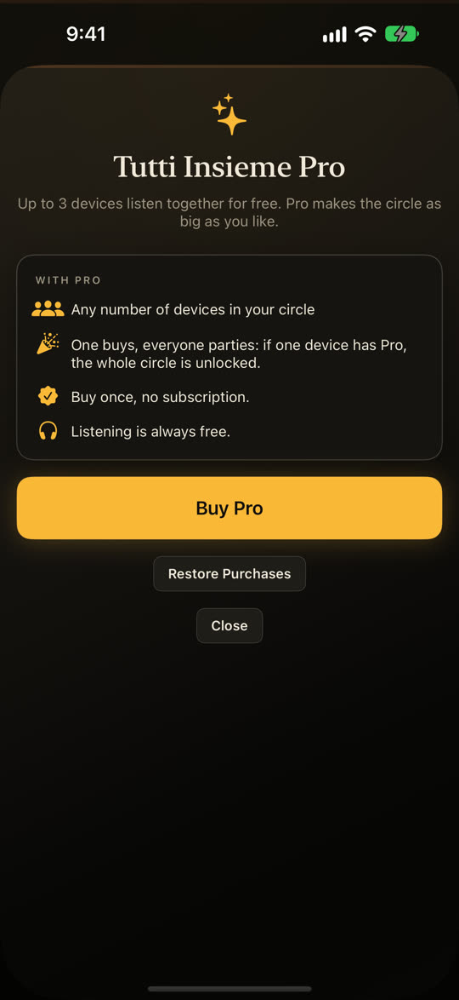
Tutti Insieme Pro
Something doesn’t work?
- The phones don’t find each other: are they on the same Wi‑Fi, and did you tap Allow for the local network? Guest and hotel Wi‑Fi often keeps devices apart — a Personal Hotspot always works.
- A song is greyed out: it comes from a streaming subscription and is copy-protected. Use files you own — or connect the device that plays it by cable and use Player › Live Input.
- More answers on the Support page.
The screenshots come from the iOS Simulator with invented demo music; on your phone, the names of your devices and songs appear.